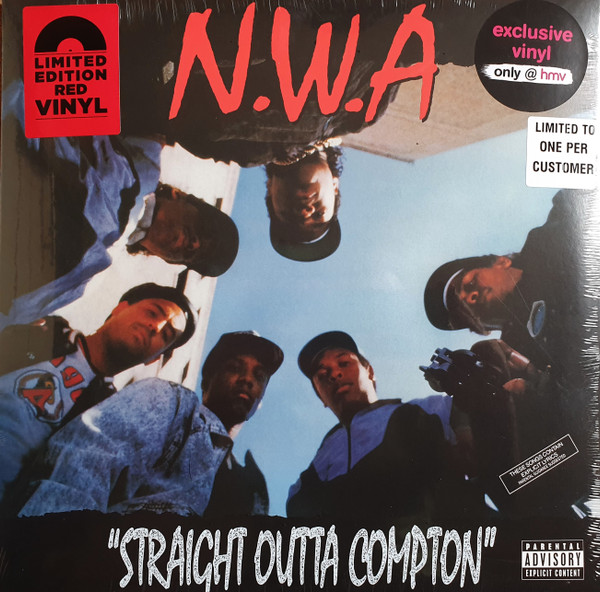
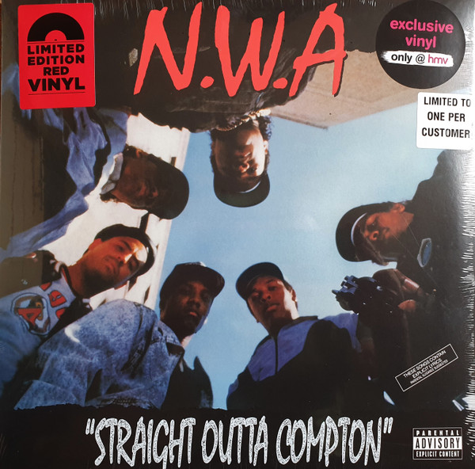

O Movimento
O hip hop é um gênero cultural que surgiu nas comunidades afro-americanas e latinas no sul do Bronx, Nova Iorque, na década de 1970.
Ele engloba uma série de elementos interligados, incluindo música, dança, moda e arte visual, bem como uma atitude e abordagem específicas em relação à vida e à expressão criativa.
O hip hop é caracterizado por sua influência nas ruas e na cultura urbana, sendo uma forma de autoexpressão e protesto.
O hip hop também incorpora elementos culturais, como moda, gírias e atitudes, que muitas vezes refletem as experiências e desafios enfrentados pelas comunidades marginalizadas.
Ao longo das décadas, o hip hop expandiu-se globalmente, influenciando a música, a moda e a cultura popular em todo o mundo.
Além disso, o hip hop também desempenhou um papel importante na promoção do ativismo social, na conscientização sobre questões como racismo, desigualdade e injustiça.
Rap
O rap é mais do que apenas um gênero musical; é uma forma de expressão artística que emergiu das ruas e das vozes dos marginalizados, transformando-se em uma poderosa ferramenta de comunicação e mudança social.
Originário das comunidades urbanas nos bairros periféricos dos Estados Unidos, o rap encontrou sua voz nos anos 1970 e rapidamente se espalhou pelo mundo, conquistando corações e mentes com suas letras sinceras e batidas marcantes.
Se eu fosse você eu comprava...
Straight Outta Compton
"Straight Outta Compton" é uma icônica música de rap lançada pelo grupo N.W.A (Niggaz Wit Attitudes) em 1988. A faixa é também o título do álbum de estreia do grupo, lançado no mesmo ano. A canção é notável por sua representação crua e direta da vida nas ruas de Compton, um bairro periférico de Los Angeles, Califórnia, conhecido por sua violência, crime e tensões raciais.
A letra da música aborda temas como brutalidade policial, gangues, drogas e a dura realidade do cotidiano na comunidade de Compton. A faixa captura a raiva e o descontentamento dos membros do N.W.A com as condições sociais e as injustiças enfrentadas por eles e por outros jovens negros em suas vidas.
 

DJing
O DJing é uma forma de arte que se tornou intrínseca à cultura musical contemporânea.
Mais do que simplesmente tocar músicas, ser um DJ envolve a habilidade de criar uma narrativa sonora única, manipular faixas e controlar a energia de um evento, seja uma festa, um clube noturno ou um festival de música.
No coração do DJing está a habilidade de mixar músicas de diferentes gêneros e estilos de forma fluida e criativa, criando uma experiência auditiva contínua e empolgante para o público. Os DJs não apenas selecionam e tocam músicas, mas também usam técnicas como mixagem harmônica, transições suaves e efeitos sonoros para criar uma jornada musical envolvente.
Breakdance
O breakdance, frequentemente chamado de "b-boying" ou "b-girling", é uma forma vibrante e expressiva de dança que se originou como parte do movimento cultural hip-hop nas ruas de Nova York, na década de 1970. Com sua combinação única de movimentos acrobáticos, ritmo e estilo individual, o breakdance se tornou uma das disciplinas mais reconhecidas e apreciadas da cultura hip-hop.
O breakdance é muito mais do que simplesmente executar movimentos físicos; é uma forma de autoexpressão. Os dançarinos incorporam seu estilo, personalidade e energia única em cada performance. Eles competem em batalhas de dança, onde demonstram suas habilidades, criatividade e presença no palco.
Ative o som para o Break!
Graffiti
O graffiti, frequentemente considerado uma forma de expressão artística rebelde e vibrante, é uma manifestação cultural que transcende as fronteiras entre arte, protesto e identidade. Originário das ruas urbanas e das comunidades marginais, o graffiti emergiu como uma voz visual que desafia as normas sociais, fazendo uma declaração ousada e colorida.
No âmago do graffiti está a ideia de tomar espaços públicos e transformá-los em telas em branco para contar histórias, expressar emoções e transmitir mensagens. Ao contrário da arte tradicional que pode ser confinada a galerias, o graffiti invade o espaço público, criando um diálogo direto com as pessoas que o encontram em seus ambientes cotidianos.
Os artistas do graffiti, conhecidos como "writers" ou "graffiti artists", empregam uma variedade de técnicas, estilos e materiais para criar suas obras. Desde tags ousadas e letras estilizadas até murais elaborados e imagens detalhadas, o graffiti abrange uma ampla gama de formas visuais. As paredes da cidade, os vagões de trem e até mesmo os edifícios abandonados se tornam lienzos improvisados onde as histórias são contadas e as visões são compartilhadas.
Agora é sua vez!
.png)